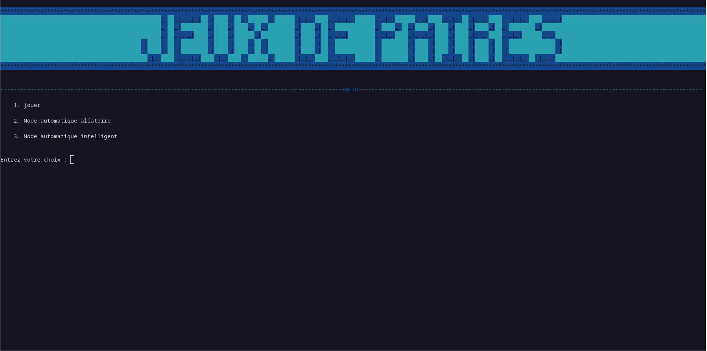
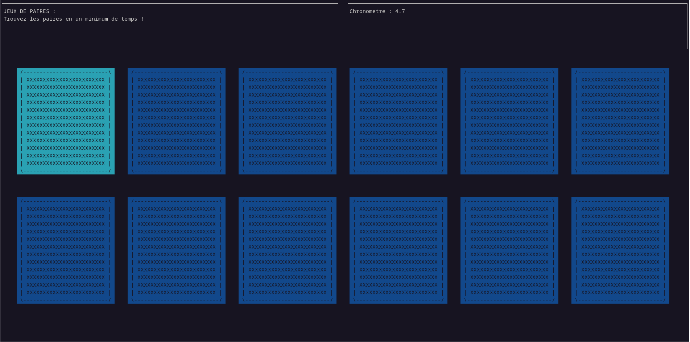
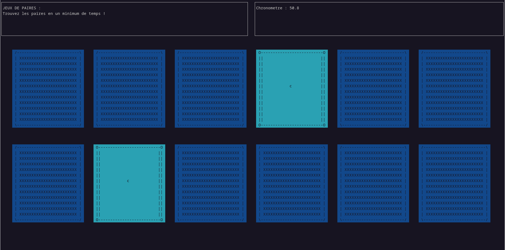

Au lancement du jeu, la page de menu apparait.
Trois modes de jeu vous y sont proposés. Vous devez taper le numéro correspondant au mode souhaité.
Pour le moment, interessons nous seulement au premier mode qui vous permet de jouer.
Une fois le mode choisi, vous vous retrouvez sur la page de jeu.
Cette page possède trois parties. La première, dans le coin en haut à gauche rappelle très brièvement les règles de jeu. La seconde, dans le coin haut droit, indique votre chronomètre actuel. Enfin, au centre vous trouvez le plateau de jeu avec les 12 cartes mises à disposition.
Le jeu des paires est un jeu simple à comprendre. Vous disposez de 12 cartes initialement face cachées. Vous pouvez pouvez les retourner deux à deux.

L'objectif est de retourner les deux cartes du même motif en même temps. Dans ce cas elles sont affichées de manière figées et le restent jusqué'à la fin de la partie.
Le but du jeu est donc de trouver toutes les paires en un minimum de temps.
Pour cela, vous disposez des touches suivantes.
- < Fleches claviers >....Se déplacer (modifier la carte survolée)
- < Touche entrée >......Selectionner la carte actuellement survolée
- < Q >.......................Quitter la partie (à touts moments de la partie et avec tous modes de jeu)
- < D >.......................Modiffier le thème de couleures (à touts moments et avec tous modes de jeu)
Trois thème de couleurs vous sont propausés :
Et voila, vous savez jouer au jeu des paires !
Pour savoir comment retrouver vos meilleurs scores...
Etape 3
Retrouver vos meilleurs scores